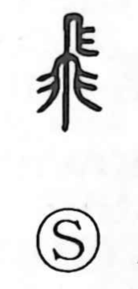

飛

Kun: tobu, tobasu | On: hi
to fly ・ to soar ・ to rise ・ swift
Explanation
飛 pictures a bird spreading its wings to take flight. The early form preserves the body and extended wings, making the movement of rising into the air visible.
From flying come soaring, going upward, and passing beyond a boundary. A lofty pavilion can be called 飛閣, its height suggesting something raised into the air. The word also describes things leaping, scattering, or travelling away.
Flight readily gives speed. An urgent proclamation sent swiftly from place to place is a 飛檄; clouds moving across the sky are 飛雲. The different uses extend the same airborne movement into height, distance, and rapid conveyance.